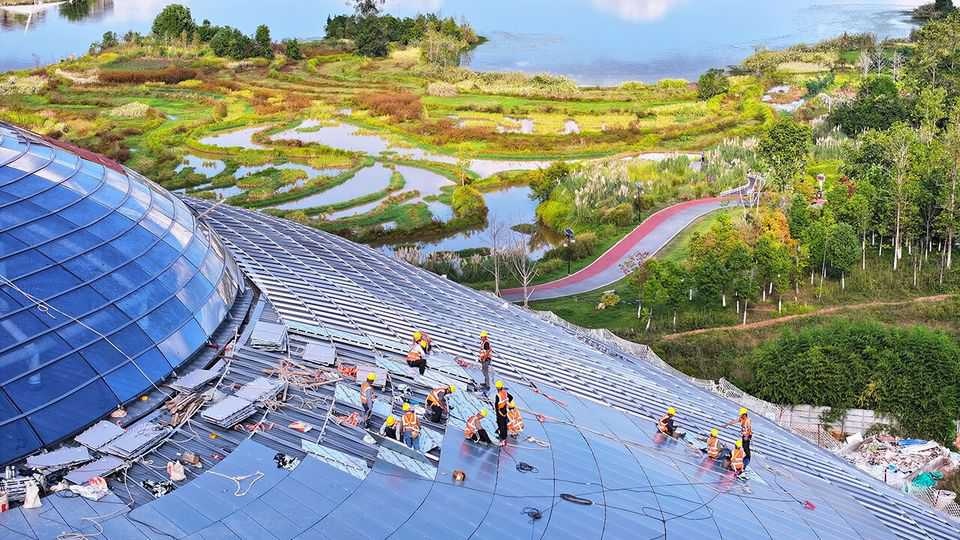

For its own sake, China should change its growth model
It is suffering economic costs for its industrial dominance
June 11th 2026

In global trade, limitation is the sincerest form of flattery. China’s manufacturers have become formidable global competitors, even in sophisticated industries that were once the preserve of much richer countries. They have outflanked Germany’s carmakers, stolen a march on South Korean shipbuilders and narrowed the gap with American chip designers. It is a tribute to their success that world leaders are scrambling to limit the threat to cherished domestic industries and avoid risky dependencies. Later this month, for example, ministers from the European Union will meet to consider more forceful countermeasures. One idea is to require European firms to diversify their suppliers, rather than relying so heavily on Chinese inputs.
The evolution of China’s exports, which grew by more than 19% year-on-year in May, is a source of satisfaction for the country’s leaders. Trade’s contribution to growth has helped the country withstand the bursting of its property bubble in 2021. China’s dominant position in many international supply chains also gives it geopolitical clout in a hostile world. The country’s leaders believe in their historical-materialist bones that national greatness lies in technological sophistication and manufacturing might. Chairman Mao believed that power grew out of the barrel of a gun, and that heavy industry makes a country strong. His successors hope that high-tech exports will make China indispensable.
But although it is a source of pride for China’s leaders, the country’s high-tech advance has not lifted the animal spirits of China’s people. Consumer confidence has still not recovered from the covid-19 lockdowns and the property slump, despite a stock-market rally in late 2024. Retail sales in April rose by only 0.2% compared with a year earlier, even before adjusting for inflation. Car sales collapsed, declining by more than one-fifth. Judged not by industrial prowess but by the health of the overall economy, China’s growth model is failing.
There are several reasons for the incongruity. Unlike its past export booms, which drew millions of migrant workers to coastal factories, China’s more recent success has not generated many jobs. Export prices have risen faster than volumes. And China’s leading industries are no longer labour-intensive. Spending on electric vehicles generates fewer jobs per yuan than an equivalent outlay on traditional cars or new homes. The proportion of migrant workers finding jobs in manufacturing has dropped from almost 37% in 2010 to 28% last year. Many instead work as delivery riders or elsewhere in the gig economy. They occupy bike lanes, not assembly lines.
China’s high-tech industry is also tightly clustered in a handful of cities. This geographical concentration is one source of its strength, allowing suppliers to specialise, talent to congregate and ideas to circulate. But it also widens the divide between leading and lagging regions. China’s previous growth model, based on manic home-building, was dispersed across the entire country, including some unpromising backwaters it should probably have left undisturbed. China’s new model is pickier about place. Inland provinces’ share of Chinese industry has declined from almost 48% in 2013 to only 36% last year.
A third reason why China’s high-tech manufacturing push has failed to stimulate a broader recovery is fiscal. Emerging industries should deepen the tax base, helping to fill the coffers of the local governments that host them. But in China the flow of resources often runs in the opposite direction. Keen to back local champions in the industries of the future, city and provincial governments offer tax breaks and subsidies that erode their financial standing. Fiscal support prompts too many firms to enter fashionable industries, which can sap the profits of genuinely efficient rivals. Last year AlixPartners, a consultancy, calculated that only 15 of China’s 129 EV brands would be financially viable by 2030.
On the face of it China’s export triumphs should help it ameliorate its domestic economic weakness. Instead the two seem mutually reinforcing. Limp spending at home results in falling prices, low interest rates and a cheap currency, all of which make Chinese goods still more competitive on world markets. Booming exports are also propping up growth, allowing China’s policymakers to delay tougher measures to restore consumer confidence, such as higher social spending or a new effort to stabilise the property market. In the face of China’s manufacturing dominance, European leaders aim to diversify their continent’s sources of supply. China’s leaders should do more to diversify their country’s sources of demand. ■
Subscribers to The Economist can sign up to our Opinion newsletter, which brings together the best of our leaders, columns, guest essays and reader correspondence.